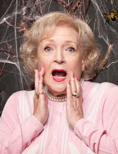

About Me

This series revolves around four older, single women (three widows and one divorcee) sharing a house in Miami, Florida. The owner of the house is a widow named Blanche Devereaux (Rue McClanahan), who was joined by fellow widow Rose Sylund (Betty White) and divorcee Dorothy Zbornak (Bea Arthur). They both responded to a room-for-rent ad on the buleetin board of a local grocery store. In the pilot episode, the women had a gay cook named Coco (Charles Levin), who was subsequently removed [5]. The three were soon joined by Dorothy's mother, Sophia Petrillo (Estelle Getty), after the retirement home where she lived, Shady Pines, burned down. [6][7].
Thank you for being a friend. Travel down a road and back again. Your heart is true, you're a pal and a confidante. And if you threw a party, invited everyone you knew, you would see the biggest gift would be from me and the card attached would say, Thank You For Being a Friend!